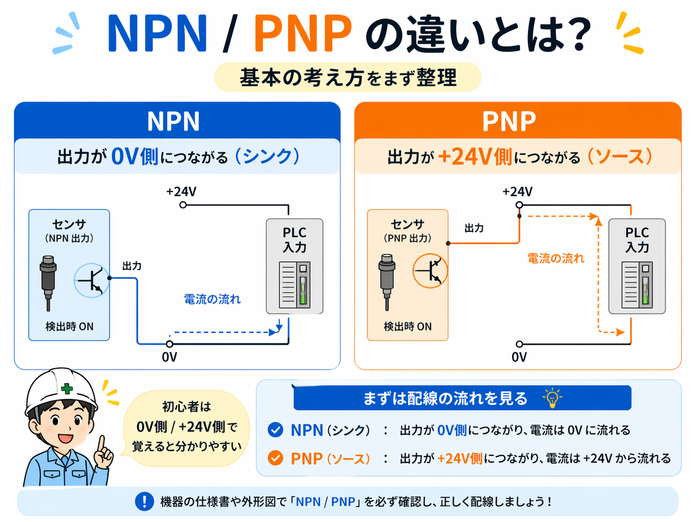
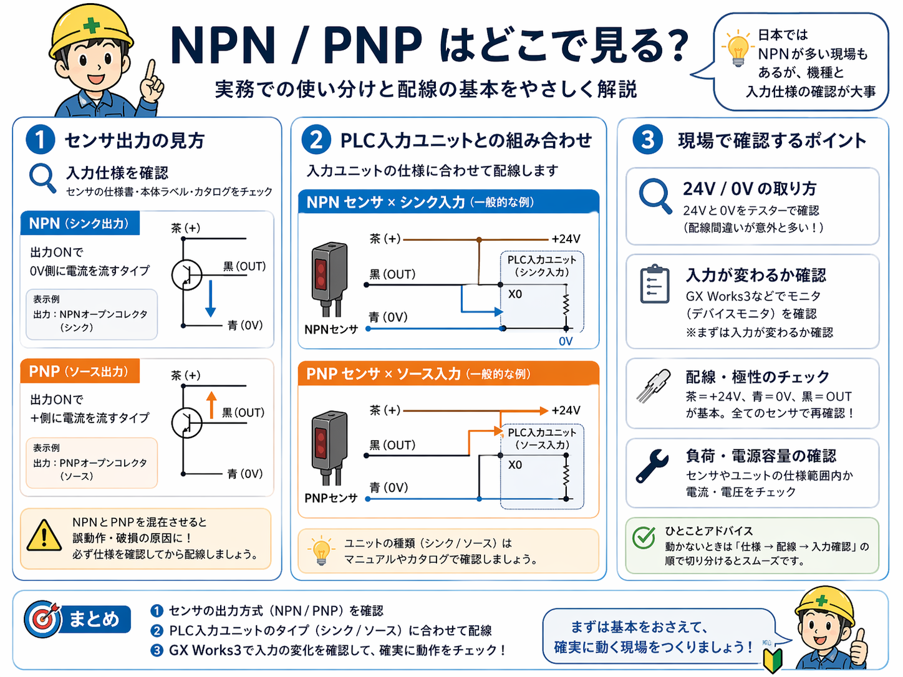

NPN / PNP とは？
NPN / PNP は、主に センサの出力方式 や PLC入力との組み合わせ を考える時に出てきます。 最初は難しく感じますが、初心者向けにかなりざっくり言うと、NPN は 0V側、PNP は +24V側を見る考え方です。
NO / NC のように「開く / 閉じる」を見るテーマではなく、どちら側へ電流を流す考え方か を見るテーマだと思うと整理しやすいです。

まずは基本の考え方
NPN
検出した時に出力が0V側につながるイメージです。よく シンク出力 と呼ばれることがあります。
- 0V側へ引っ張るイメージ
- 出力が 0V側につながる
- 初心者は「NPN = 0V側」でまずOK
PNP
検出した時に出力が+24V側につながるイメージです。よく ソース出力 と呼ばれることがあります。
- +24V側へつなぐイメージ
- 出力が +24V側につながる
- 初心者は「PNP = +24V側」でまずOK
センサ出力ではどう見る？
現場で一番多いのは、近接センサや光電センサの出力方式で NPN / PNP を見る場面です。 センサ本体や仕様書、カタログに NPN出力 / PNP出力 と書かれていることがあります。
この時に大事なのは、センサ単体で覚えようとしすぎず、PLC入力とセットで考えること です。

NPNセンサ
NPNセンサは、出力ONの時に 0V側へつながる考え方です。 配線図で見ると、出力線が 0V側へ寄るイメージで追うと分かりやすいです。
PNPセンサ
PNPセンサは、出力ONの時に +24V側へつながる考え方です。 配線図で見ると、出力線が +24V側へ寄るイメージで見ると整理しやすいです。
PLC入力との組み合わせ
実務ではここがかなり大事です。NPN / PNP はセンサだけの話ではなく、PLC入力ユニットとの組み合わせで考える 必要があります。
細かい言い方を減らすと、センサの出力方式と入力ユニット側の受け方が合っていないと、うまく入力が入らないことがあります。
NPN側で見る時
- センサが NPN か確認する
- 0V側につながる流れで見る
- 入力ユニットとの組み合わせを確認する
PNP側で見る時
- センサが PNP か確認する
- +24V側につながる流れで見る
- 入力ユニットとの組み合わせを確認する
GX Works3 での確認
GX Works3 では、入力モニタでセンサ反応時に X が入るか確認します。 ただしソフト画面だけではなく、センサLED、配線、24V / 0V、入力ユニット仕様も一緒に見るのが大事です。
現場で確認するポイント
1. まず仕様を確認する
センサ本体、型番、仕様書、カタログで NPN か PNP かを先に確認します。 見た目だけで判断しない方が安全です。
2. 24V と 0V の取り方を見る
意外とここで配線ミスがあります。テスターで 24V / 0V を確認してから見た方が安心です。
3. 入力が変わるかを見る
GX Works3 のデバイスモニタなどで、センサ反応時に入力がちゃんと変わるか確認します。
4. 混在に注意する
NPN と PNP をごちゃまぜにすると、正常に動かないだけでなくトラブルの原因になりやすいです。
まとめ
NPN / PNP は最初は難しく見えますが、まずは次の2つから入ると整理しやすいです。
NPN
0V側
PNP
+24V側
そのうえで、センサ仕様、PLC入力ユニット、実際の入力変化をセットで見ていくと、現場でも追いやすくなります。
次に読むとつながりやすい記事
NPN / PNP の次は、センサ系の記事や入力と出力の記事と行き来しながら読むと理解しやすくなります。 すでにある記事なら、近接センサ、光電センサ、入力と出力、NO / NC も相性が良いです。